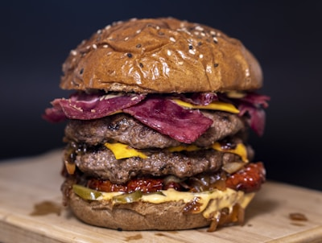

Messiah McCaskill
High school student at e3 Civic High
Burgers are one of my favorite foods because they are simple, filling, and customizable. You can change the toppings, the bun, or the sauce and still have a great meal. Places like In-N-Out and Shake Shack make burgers that are popular because of their quality and flavor. Burgers are also easy to enjoy with friends and family, which makes them even better.

Image by [Photographer Name] — CC BY 4.0

Image by [Photographer Name] — CC BY 4.0

Image by [] — CC BY 4.0
Favorite Foods
- Pizza
- Burgers
Favorite Burger Facts
- Burgers can be made with beef, chicken, or plant-based patties
- In-N-Out is known for its fresh ingredients and secret menu
- Shake Shack is famous for its soft buns and special sauce
- Burgers are popular all over the world